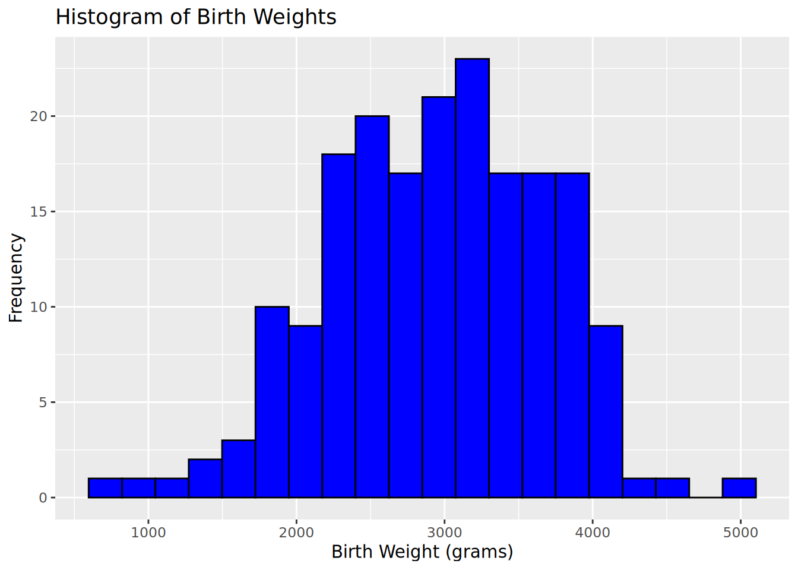
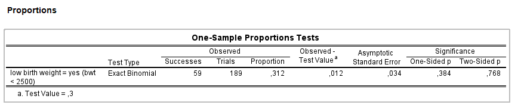

Point Estimates and 95% Confidence Intervals for Population Means
We will start by analyzing the variable ‘birth weight in grams’ (bwt), which is the main outcome of this study.
The mean, standard deviation, and standard error of the mean of the variable ‘birth weight in grams’ (bwt) are as follows:
Mean: 2944.7
Standard deviation: 729
Standard error (SE): 53.03
ImportantQuestion 1
Based on these summary statistics, what is the estimated mean birth weight for the population?
TipAnswer question 1
The estimated mean birth weight for the population is 2944.7 grams.
ImportantQuestion 2
Manually calculate the corresponding 95% confidence interval based on the normal approximation.
TipAnswer question 2
Using the normal approximation, the 95% confidence interval for the population mean birth weight can be calculated as mean ± 1.96 * SE, where the standard error (SE) is equal to 53.03. Therefore, the 95% confidence interval is (2840.7, 3048.6).
You can also use SPSS/R to calculate this 95% confidence interval by using the t-distribution. This gives the following result: (2840, 3049.3)
ImportantQuestion 3
How does the 95% confidence interval based on the t-distribution compare to the 95% confidence interval based on the normal approximation that you manually computed?
TipAnswer question 3
The 95% confidence interval that uses the t-distribution is sightly wider compared to the 95% confidence interval that was manually computed using the normal approximation. However, given that the sample size is relatively large (n = 189), the difference is minimal. Larger differences would be expected with smaller sample sizes.
One-Sample t-Test
One Sample t-test
data: lowbwt$bwt
t = -1.0437, df = 188, p-value = 0.298
alternative hypothesis: true mean is not equal to 3000
95 percent confidence interval:
2840.049 3049.264
sample estimates:
mean of x
2944.656
ImportantQuestion 4
You see that the test has 188 degrees of freedom. Why?
TipAnswer question 5
The degrees of freedom (df) for the one-sample t-test is equal to (sample size - 1), so df = 189 - 1 = 188 in this case.
ImportantQuestion 5
Based on the results of the test, does the population mean significantly differ from 3000?
TipAnswer question 5
The value of t-statistic is -1.04, and the corresponding p-value is 0.298. Since the p-value is greater than the significance level of 0.05, we fail to reject the null hypothesis. Therefore, the current sample does not provide sufficient evidence to conclude that the population mean significantly differs from 3000.

ImportantQuestion 6
Looking at the histogram, would you say that the data are normally distributed?
TipAnswer question 6
Based on the histogram, the data appears to be reasonably normally distributed.
Point Estimates and 95% Confidence Intervals for Population Proportions
Next, we will explore the variable ‘low birth weight’ (low), which is a dichotomous variable that takes a value 1 if the baby had a low birth weight (defined as a birth weight < 2500g) and a value of 0 otherwise.
The frequency table for this variable is as follows:
0 1
130 59
ImportantQuestion 7
Based on these frequencies, what is the estimated proportion of low birth weight babies in the population?
TipAnswer question 7
The estimated proportion of low birth weight babies in the population is 59 / (130 + 59) = 0.31.
ImportantQuestion 8
Calculate the corresponding 95% confidence interval based on the Normal approximation.
TipAnswer question 8
Using the sample proportion p, the standard error (SE) can be calculated as \(\sqrt(p * (1 - p) / n)\), where n is the total number of observations. The 95% confidence interval can then be calculated as p ± 1.96 * SE. In this case, the SE is equal to 0.03. Therefore, the 95% confidence interval is (0.24, 0.38).
Binomial Test
Subsequently, we perform an exact binomial test to assess whether the proportion of low birth weight babies in the population differs significantly from a hypothesized value of 30%:
R results
Exact binomial test
data: sum(lowbwt$low == 1, na.rm = TRUE) and length(na.omit(lowbwt$low))
number of successes = 59, number of trials = 189, p-value = 0.7509
alternative hypothesis: true probability of success is not equal to 0.3
95 percent confidence interval:
0.2468886 0.3834546
sample estimates:
probability of success
0.3121693
SPSS results

Screenshot of the SPSS output table
Because the binomial distribution with n=189 and p=0.3 is reasonably symmetric, the two-sided p-value provided by SPSS is close to the one provided by R. In the answers below, we will use the R results.
ImportantQuestion 9
Does the proportion of low birth weight babies differ significantly from 30%?
TipAnswer question 9
The observed number of successes is 59, and the total number of trials is 189. Assuming a null hypothesis proportion of 30%, the expected number of successes is 0.3 * 189 = 56.7. The observed number of successes is relatively close to the expected number of successes under the null hypothesis, resulting in a p-value of the binomial test of 0.75. Since this p-value is greater than the significance level of 0.05, we fail to reject the null hypothesis. Therefore, the current sample does not provide sufficient evidence to conclude that the proportion of low birth weight babies differs significantly from 30%.
ImportantQuestion 10
The Dutch government intends to start a campaign against drinking alcoholic beverages if over 50% of the adolescents drink alcoholic beverages regularly (at least once a week). A random sample of 200 adolescents is taken and 128 admit that they drink alcohol regularly (we assume all 200 speak the truth). Test the null hypothesis that 50% of the Dutch adolescents drink alcohol, using a significance level of 5%. Use the exact binomial test for this question.
TipAnswer question 10
The observed number of successes is 128, and the total number of trials is 200. Assuming a null hypothesis proportion of 50%, the expected number of successes is 0.5 * 200 = 100. The observed number of successes is considerably higher than the expected number of successes under the null hypothesis, resulting in a p-value of the binomial test that is <0.001:
binom_test_result <-binom.test(128, 200, p =0.50)binom_test_result
Exact binomial test
data: 128 and 200
number of successes = 128, number of trials = 200, p-value = 9.13e-05
alternative hypothesis: true probability of success is not equal to 0.5
95 percent confidence interval:
0.5692861 0.7064953
sample estimates:
probability of success
0.64
Therefore, we reject the null hypothesis and conclude that the proportion of Dutch adolescents who drink alcohol regularly is significantly higher than 50%.
ImportantQuestion 11
Rather than using an exact binomial test, we can also use the normal approximation of the binomial distribution to obtain an approximate p-value for the above hypothesis test. Manually calculate this approximate p-value and compare it to the p-value obtained from the binomial test. Is the use of the normal approximation appropriate in this case?
TipAnswer question 11
To manually calculate an approximate p-value using the normal approximation, we first calculate the sample proportion \(p\) as the number of successes divided by the total number of trials (i.e., \(p\) = 128 / 200 = 0.64). We then calculate the standard error (SE) as \(\sqrt(\pi * (1 - \pi) / n)\), where \(n\) is the total number of observations and \(\pi\) is the null hypothesis proportion. This gives a SE of 0.035.
Under the null hypothesis, the sample proportion is approximately Normally distributed with mean \(\pi\) = 0.5 and SE = 0.035. To calculate the probability of observing a sample proportion at least as extreme as the one observed in the data, we can calculate the z-score as \((p - \pi) / SE\). In this case, the z-score is 3.96, resulting in a p-value <0.001, which is consistent with the p-value obtained from the binomial test.
The use of the normal approximation is very reasonable in this case because \(n * \pi = 200 * 0.5 =100\) is considerably larger than 5, which is the minimum requirement for the normal approximation to be valid.